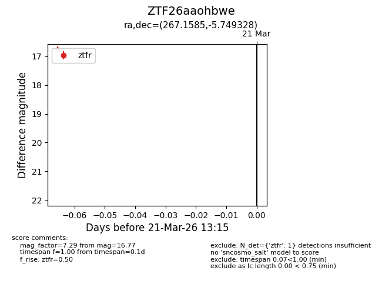
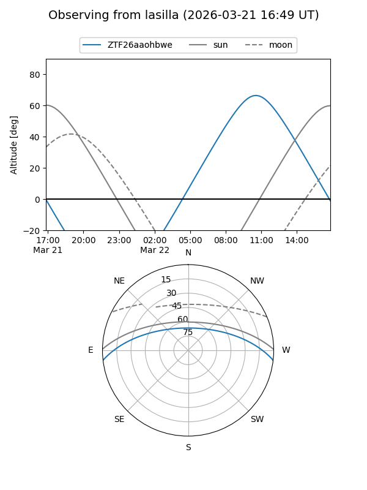
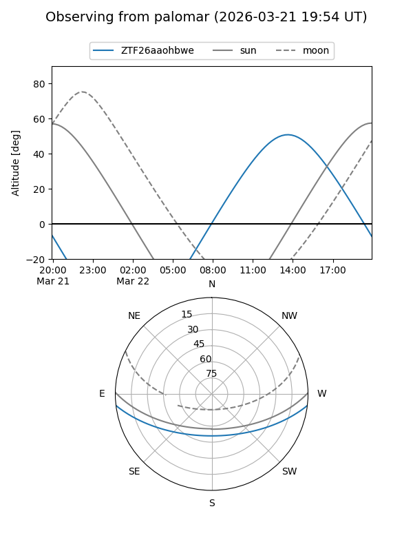

ZTF26aaohbwe
Target ZTF26aaohbwe at 2026-03-21 13:17
Aliases and brokers:
FINK: link
Lasair: link
ALeRCE: link
alt names
ZTF26aaohbwe (ztf,fink_ztf)
Coordinates:
equatorial (ra, dec) = 267.1585,-5.74933
equatorial (HMS+DMS) = 17:48:38.03,-05:44:57.58
galactic (l, b) = (20.4557,+11.18374)
Flags:
Photometry:
last ztfr=16.77
1 ztfr detections
Lightcurve

Visibility


Additional plots